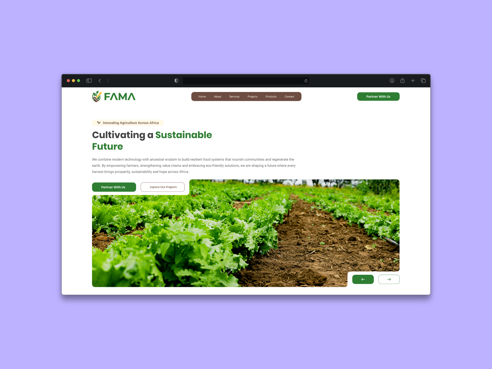
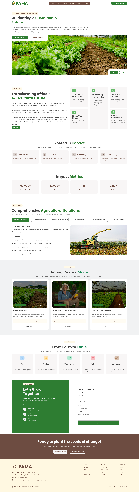
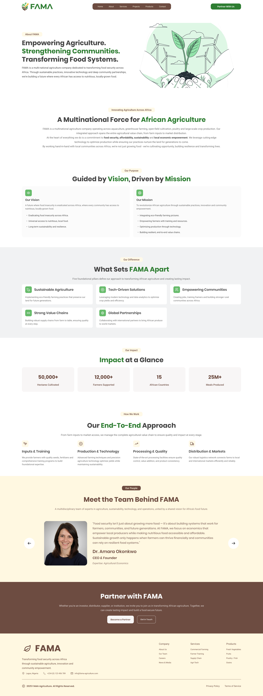

FAMA - Agricultural Website
A multinational agriculture organization focused on improving food security and agricultural productivity across Africa.
Problem Statement
Agriculture organizations working across multiple regions often struggle to communicate their initiatives and impact effectively through digital platforms. Without a well-structured website, it becomes difficult for investors, partners, and stakeholders to understand the organization’s projects and long-term goals.
Key Issues Identified:
- Limited visibility into agricultural initiatives
- Difficulty communicating sustainability impact
- Lack of clear structure for presenting projects
- Limited engagement with potential partners and investors
Design Goals
- Clearly present FAMA’s mission and vision
- Showcase agricultural initiatives and sustainability effects
- Provide structured information about projects
- Improve engagement with partners and investors
UX Audit of the Existing System
An analysis revealed that many platforms struggle to balance storytelling with structured information about projects and impact.
- Agricultural projects were often presented without clear structure
- Impact metrics were not highlighted effectively
- Sustainability initiatives were difficult to understand quickly
Ideation & Exploration
During ideation, the main focus was designing a platform that communicates both the organization’s mission and its real-world impact.
- Clear storytelling through structured sections
- Dedicated pages for agricultural initiatives
- Highlighting impact metrics and sustainability goals
Final Design
The final design focuses on presenting agricultural initiatives through a structured and engaging digital experience.



Expected Impact
- Better communication of agricultural initiatives
- Increased engagement with partners and investors
- Greater visibility for sustainability efforts
Reflections & Learnings
This project helped me understand the importance of designing websites that communicate complex initiatives and impact-driven missions effectively.